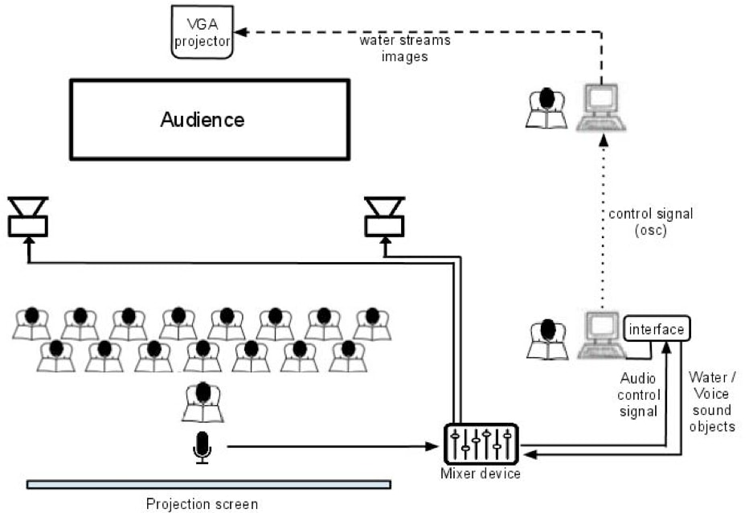

Litany for the Whale (performance multimedia)
Ensamble de exploración vocal de los Andes (EEVA)
Dirección: Carolina Gamboa Hoyos, DMA
Programación multimedia: Sergio Granada Moreno
Años: 2011-2012
“Litany for The Whale” es una obra de John Cage (1912 - 1992) compuesta en 1980. Bajo la dirección de la doctora Carolina Gamboa Hoyos, el Ensamble de exploración vocal de los Andes presentó un performance multimedia basado en la partitura original. Dicho performance se presentó en el Museo Nacional de Colombia (abril de 2012), el Auditorio Mario Laserna y la Iglesia-Museo Santa Clara (mayo de 2011).
La realización de este trabajo incluye un diseño interactivo de multimedia en tiempo real, basado en una señal de control proveniente de la microfonía del Ensamble (“envelope following”). Junto con las voces amplificadas, la proyección de video y de nuevos objetos sonoros conforman un entorno multimedia que se presenta al público de acuerdo a las indicaciones originales de la partitura. El procesamiento de señal digital de audio y video es implementado en Pure Data a través de varios “patches” interconectados en red (utilizando dos computadoras); el método de composición de Cage evidenciado en la partitura original (es decir, las "palabras"), se utiliza también para llevar a cabo la generación de material audiovisual al interior de Pure Data. Fundamentalmente, existe una cadena de cooperación entre voces, transductores y procesamiento de señal, como se muestra en la siguiente figura:

Hoyos presentó esta obra como la primera parte de un programa llamado "Agua", el cual incluyó también piezas de música contemporánea escritas por compositores como Luciano Berio, M. Schafer y Michael Pisaro.